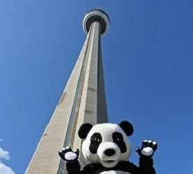

Goal of the year
Mission Green Toronto
CN Tower climb for nature
In 2017, WWF Canada hosted the CN Tower Climb for Nature. Fitness and nature enthusiasts around the city participated to conquer the challenge of climbing the tower, while raising almost $1.4 million dollars for conservation. The event was the most successful one to date, and the WWF will be hosting the climb next year, as well.
Mission Green Toronto has set its sights on the 2018 CN Tower Climb and the team plans on reaching a fundraising goal of $5,000. Next year’s climb will not only be an amazing event for nature, but also a great experience for us.